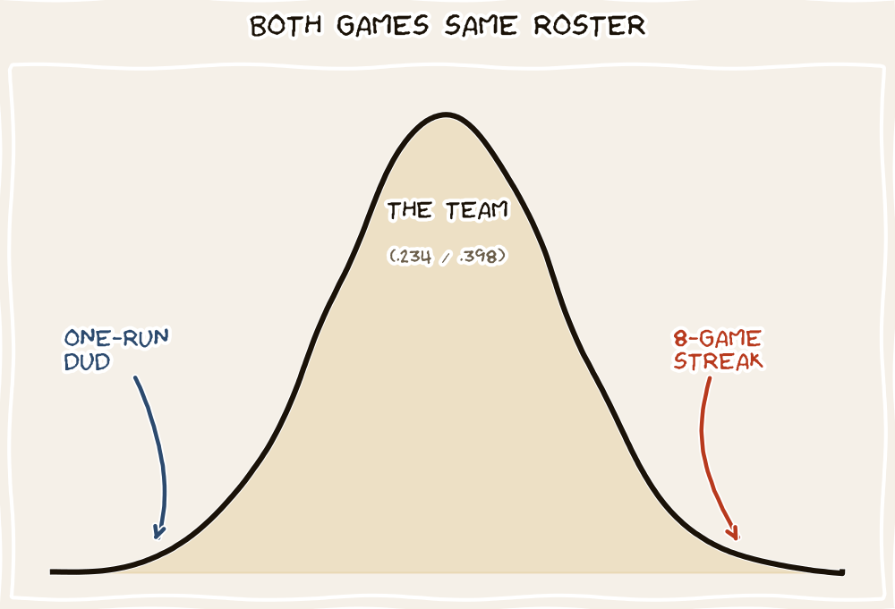

How Do You Win Eight Straight and Then Lose by Six? You Build an Offense Designed to Do Exactly That.

Seattle came into the series as the hottest team in baseball, winners of eight in a row. They took the opener 3–2, then put on a show: an 8–3 win powered by three home runs, including Patrick Wisdom’s first of the year and Jhonny Pereda’s second big-league blast. Streak at eight, broadcast graphics glowing. Then the finale: the Mets handed the ball to Freddy Peralta, chased Seattle ace George Kirby after four innings, and won 7–1. The Mariners scored exactly one run. Streak over, sweep avoided.
The instinct is to treat those two games — the 8-run explosion and the 1-run dud — as a team turning hot and then cold. They aren’t. They’re two ordinary draws from the same unusually wide deck. The Mariners are built to score in bunches or not at all, and a team built that way will hand you exactly this sequence on a regular basis.
A Lineup Built on the Long Ball Is a Lineup Built on Variance
Look at the shape of Seattle’s offense, not its total. They are hitting .234 as a team — 23rd in the majors — while slugging .398, which ranks 9th. That split is the entire story. A lineup that ranks near the bottom in getting on base but near the top in power doesn’t manufacture runs single by single; it waits for the three-run homer. Their overall run total (267, right at league average) is built the high-wire way.
An offense that depends on the home run is, by its nature, a high-variancei offense. Singles and walks are frequent, low-impact events — they smooth scoring out. Home runs are rare, high-impact events — they make scoring lumpy. A team that lives on the lumpy kind will post an 8 one night and a 1 the next without changing a thing about who they are.
This is why the streak and the blowout loss are not in tension. During eight straight wins, the homers were landing — three in a single game against the Mets. In the finale, against a pitcher who kept the ball in the yard, the same lineup had no backup plan and scored once. Same hitters, same approach, opposite result. The dice simply came up differently.
The danger is reading a boom as proof of greatness and a bust as proof of collapse. With a power-dependent team, the boom overstates how good they are and the bust overstates how bad. The truth sits at the average — and the average Mariners team is a roughly league-average offense that gets there by the most stressful route available.
The Math: Why the Long Ball Widens the Distribution
The point isn’t the average number of runs — it’s the spread around it. Two offenses can score the same per game and feel completely different.
This is the cleaner way to think about Seattle than “hot then cold.” They are not oscillating between two identities. They have one identity — a feast-or-famine power club — and a wide enough run distribution that any short stretch will show you the feast, the famine, or both in the same week.
The Same Team, Photographed at Both Extremes
On the right night, a power lineup looks unstoppable: three swings, three runs apiece-worth of damage, and an 8–3 win that makes the eight-game streak feel like destiny. But the homers are the rare event doing the heavy lifting. Take them away and the same lineup has very little else to fall back on.
The next night the balls stay in the park, the .234 average shows up, and a team that can’t string singles together scores once. The Mets didn’t solve Seattle; they caught the famine side of a wide distribution and pounced. A 7–1 final is the bust tail, not a verdict on the roster.
“Seattle didn’t get hot and then get cold. They are a .234-hitting, .398-slugging team every single day — and that shape guarantees both the eight-game streak and the one-run dud.”
— The Sports Page, on the difference between a team and its tailsSo the Mets avoided the sweep, the streak is over, and the temptation is to declare one team fixed and the other exposed. Resist it. The Mariners are a power team, and power teams trade steadiness for ceiling — they win you games no contact team could and lose you games no contact team would. Enjoy the fireworks. Just don’t mistake the size of any single explosion for the size of the team.